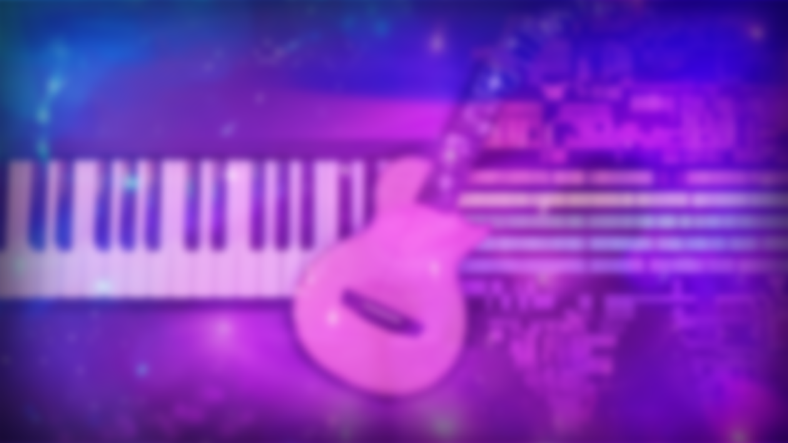

Cozy, queer-coded jazz and little universes.

Hi, I’m Auri Fell, a multi-instrumentalist, vocalist, and producer based in Ontario, Canada. I arrange, record, and produce original music and covers, drawing inspiration from jazz, folk, indie, and a cappella singing.
When I’m not composing or arranging, I’m building little worlds, from games to Blender models to stories. Welcome to my universe!
Why I Create
I love crafting, anything and everything, and I never really stop. I’m always making something in my spare time: be that music, art, 3D models, games, worlds, stories, you name it.
When I started my YouTube channel back in 2019, it was just a side project, but since then, I’ve been completely sucked into the world of music production, and I’ve loved every second of it.
Music is my way of expressing myself, of exploring ideas, of trying new things, of telling stories. It’s my way of finding clarity in the chaos of the universe. I find great joy in sharing these parts of myself with the world, so people can get to know me just a little better.